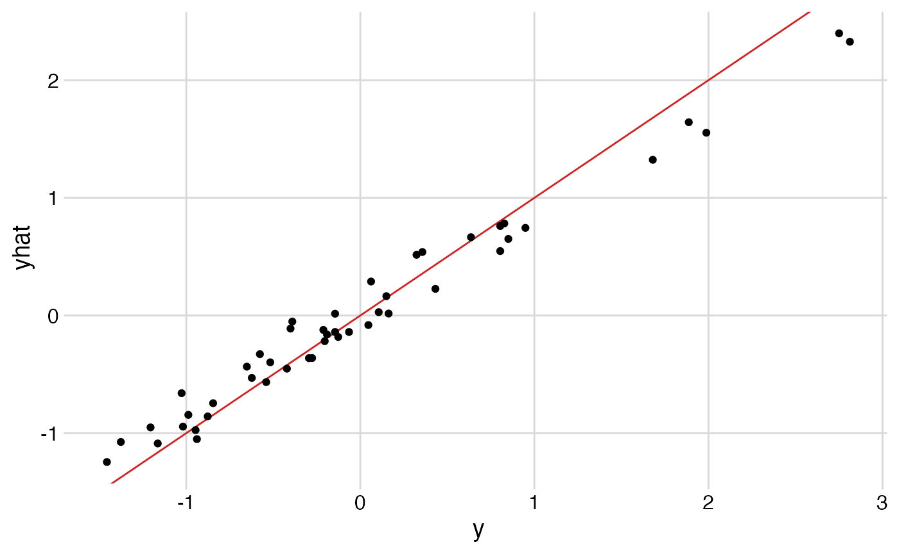

Sparse linear summaries for nonparametric regression models
nonpara-sparse-linear-summary.Rmd
library(ggplot2)
library(dplyr)
library(stringr)
library(cowplot)
theme_set(theme_minimal_grid())
library(mgcv)
library(dbarts)
library(possum)
library(lars)
library(reshape2)
library(tidyr)Load and prepare US crime data
data(UScrime, package = "MASS")
glimpse(UScrime)
#> Rows: 47
#> Columns: 16
#> $ M <int> 151, 143, 142, 136, 141, 121, 127, 131, 157, 140, 124, 134, 128, …
#> $ So <int> 1, 0, 1, 0, 0, 0, 1, 1, 1, 0, 0, 0, 0, 0, 1, 1, 0, 1, 0, 0, 0, 1,…
#> $ Ed <int> 91, 113, 89, 121, 121, 110, 111, 109, 90, 118, 105, 108, 113, 117…
#> $ Po1 <int> 58, 103, 45, 149, 109, 118, 82, 115, 65, 71, 121, 75, 67, 62, 57,…
#> $ Po2 <int> 56, 95, 44, 141, 101, 115, 79, 109, 62, 68, 116, 71, 60, 61, 53, …
#> $ LF <int> 510, 583, 533, 577, 591, 547, 519, 542, 553, 632, 580, 595, 624, …
#> $ M.F <int> 950, 1012, 969, 994, 985, 964, 982, 969, 955, 1029, 966, 972, 972…
#> $ Pop <int> 33, 13, 18, 157, 18, 25, 4, 50, 39, 7, 101, 47, 28, 22, 30, 33, 1…
#> $ NW <int> 301, 102, 219, 80, 30, 44, 139, 179, 286, 15, 106, 59, 10, 46, 72…
#> $ U1 <int> 108, 96, 94, 102, 91, 84, 97, 79, 81, 100, 77, 83, 77, 77, 92, 11…
#> $ U2 <int> 41, 36, 33, 39, 20, 29, 38, 35, 28, 24, 35, 31, 25, 27, 43, 47, 3…
#> $ GDP <int> 394, 557, 318, 673, 578, 689, 620, 472, 421, 526, 657, 580, 507, …
#> $ Ineq <int> 261, 194, 250, 167, 174, 126, 168, 206, 239, 174, 170, 172, 206, …
#> $ Prob <dbl> 0.084602, 0.029599, 0.083401, 0.015801, 0.041399, 0.034201, 0.042…
#> $ Time <dbl> 26.2011, 25.2999, 24.3006, 29.9012, 21.2998, 20.9995, 20.6993, 24…
#> $ y <int> 791, 1635, 578, 1969, 1234, 682, 963, 1555, 856, 705, 1674, 849, …
y <- UScrime %>%
pull(y) %>%
scale()
## Covariates
X <- UScrime[, -which(colnames(UScrime) == "y")] %>%
as.matrix()
## log-transform and scale the data
X[, -2] <- log(X[, -2])
X <- scale(X)
varnames <- colnames(X)
varnamesDf <- data.frame(
Var1 = seq_along(varnames),
varname = varnames
)Estimate Bayesian nonparametric regression model
set.seed(420)
cbart <- bart(X, y)
sigma2Samples <- cbart$sigma^2
rsq(y, cbart$yhat.train.mean)
ggplot() +
geom_abline(intercept=0, slope=1, col="firebrick3") +
geom_point(aes(y, cbart$yhat.train.mean)) +
labs(x = "y", y = "yhat")
fhatmat <- t(cbart$yhat.train)
## devtools::load_all()
lin <- sparseLinearSummary(X, fhatmat, y, sigma2Samples, varnames = varnames)
names(lin)
lin$summaryDfCI %>%
filter(stat == "rsq_gamma") %>%
ggplot(aes(modelSize, mid)) +
geom_linerange(aes(ymin = lo,
ymax = hi)) +
geom_point() +
# facet_wrap(~stat, ncol=1, scales = "free_y") +
labs(x = "Summary size", y = "Summary R-sq")
The “elbow point” is about 7.
# Posterior mean and credible intervals for this summary
lin$betaProjSummary %>% filter(modelSize == 7)
#> # A tibble: 15 × 5
#> # Groups: modelSize [1]
#> modelSize varname mid lo hi
#> <fct> <fct> <dbl> <dbl> <dbl>
#> 1 7 Po1 0.693 0.492 0.850
#> 2 7 Ineq 0.487 0.239 0.671
#> 3 7 Ed 0.501 0.303 0.641
#> 4 7 M 0.260 0.121 0.367
#> 5 7 Prob -0.193 -0.293 -0.0687
#> 6 7 NW 0.180 0.0527 0.322
#> 7 7 U2 0.172 0.0658 0.266
#> 8 7 Pop 0 0 0
#> 9 7 GDP 0 0 0
#> 10 7 M.F 0 0 0
#> 11 7 U1 0 0 0
#> 12 7 Time 0 0 0
#> 13 7 LF 0 0 0
#> 14 7 Po2 0 0 0
#> 15 7 So 0 0 0
# Poster plot for the summary
lin$betaProjDf %>%
filter(modelSize == 7) %>%
filter(value!=0) %>%
ggplot() +
geom_hline(yintercept=0) +
geom_violin(aes(varname, value))